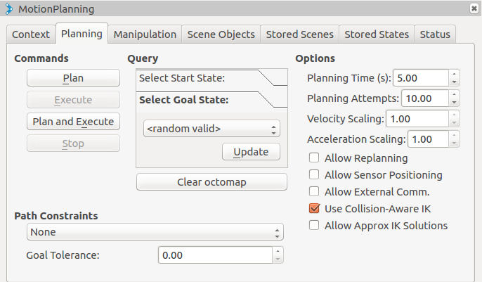

MoveIt!のRvizデモを試す¶
このページでは、iris_moveit_configパッケージを作る で作成したiris_moveit_configパッケージ内にあるRvizプラグインのデモを実行します。
demo.launch¶
以下のコマンドでデモノードを起動できます。
roslaunch iris_moveit_config demo.launch
デモが起動したら以下のようなウィンドウが表示されます。

マーカーを使ってドローンのゴールの位置と姿勢を指示します。

次に、スタートの位置と姿勢を指示するために、"Motion Planning"->"Planning Request"以下の"Query Start State"にチェックを入れます。

新しくマーカーが表示されるので、先ほどと同様にしてスタートの位置を選択します。

スタートとゴールの位置を選択したら、"Motion Planning"サブウィンドウの"Planning Library"からプランナを設定します。 また、"Workspace"から、プランナが経路計画を領域のサイズを変更します。

設定が完了したら、"Planning"タブ内の"Plan"ボタンをクリックすると経路計画がスタートします。
経路計画が完了したら以下のように計算された経路が表示されます。

以下は一連の手順をまとめた動画です。